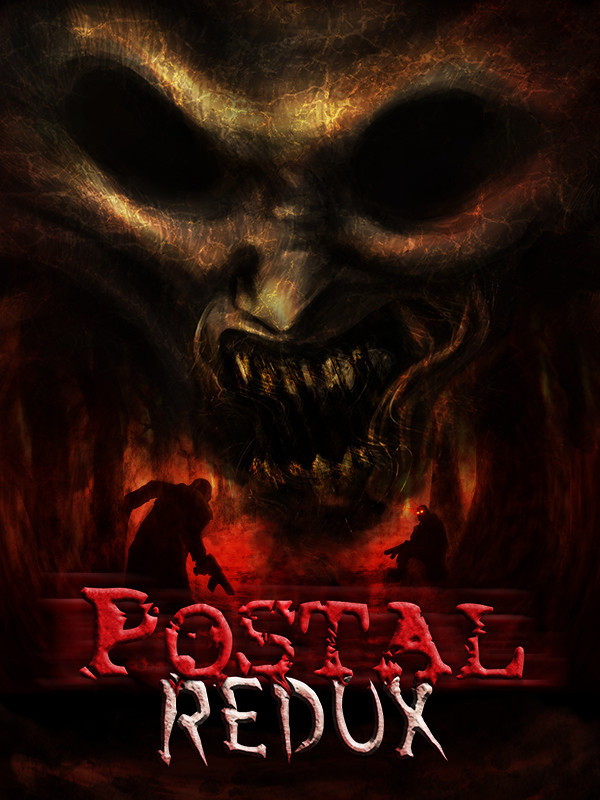

POSTAL Redux
POSTAL Redux
Details
|  | |
| Playtime | 1h 7m 0s |
| Last Activity | 23/07/2024 23:11:29 |
| Added | 16/09/2024 15:31:47 |
| Modified | 18/05/2025 0:22:22 |
| Completion Status | Played |
| Library | Steam |
| Source | Steam |
| Platform | PC (Windows) |
| Release Date | 20/05/2016 |
| Community Score | 61 |
| Critic Score | 59 |
| User Score | |
| Genre | Indie Shooter |
| Developer | Running With Scissors |
| Publisher | MD Games Running With Scissors |
| Feature | Co-Operative Multiplayer Single Player |
| Links | Official Steam Wikipedia Twitch |
| Tag | Action Co-op Co-op Campaign Dark Comedy Dark Humor Fast-Paced Gore Horror Isometric Multiplayer Online Co-Op Pixel Graphics Psychological Horror Shooter Singleplayer Surreal Top-Down Top-Down Shooter Twin Stick Shooter Violent |
Description
The classic dark and surreal twin-stick isometric shooter returns with a vengeance!
POSTAL Redux is a high definition remake of The POSTAL Dude's infamous first foray into the world. Prepare to experience his psychological journey with faithfully recreated high resolution visuals, remastered music, sounds, and dialog, and revamped and modernized gameplay. Crazed gunmen out for your blood await you around every corner. The only choice is clear: Get them before they get you. Fight back with a devastating arsenal as you make your way through a violence-stricken town.
It's time to relive the madness of GOING POSTAL!
POSTAL Redux is a high definition remake of The POSTAL Dude's infamous first foray into the world. Prepare to experience his psychological journey with faithfully recreated high resolution visuals, remastered music, sounds, and dialog, and revamped and modernized gameplay. Crazed gunmen out for your blood await you around every corner. The only choice is clear: Get them before they get you. Fight back with a devastating arsenal as you make your way through a violence-stricken town.
It's time to relive the madness of GOING POSTAL!
- Online Co-op: Go POSTAL together with up to four players! Join up with your friends to wreak carnage together.
- Online Deathmatch: Engage in free-for-all frenzies with up to eight players!
- Brand new Rampage mode: Take aim for the high score in this frantic mode that awards points for sustained kill streaks, creative methods of destruction, and blistering fast action!
- Battle through 17 levels in the classic Campaign: Beginning from your humble Home, traverse through The Mine and Trailer Park, witness the mean streets of The Ghetto and the bright lights of The City, all the way to the final standoff at the Air Force Base, including a stop at the all-new Carnival.
- Includes the original add-ons: Blast through Special Delivery's EZ Mart, Shanty Town, Earthquake, and the luxurious La Palamino Resort, and then head to Japan in Super POSTAL's Tokyo and Osaka! Play through everything together in the massive combined 23-level Excess Postage campaign!
- A wide range of foes: Defend yourself against gun crazy Vigilantes, trigger-happy Police Officers, trained and efficient SWAT and Military squads, the quintessential Marching Band, and angry Ostriches!
- 10 weapons of destruction: Lay waste with the mighty Shotgun and Spray Cannon, roast attackers with Molotovs and the Flamethrower, fill the streets with fire with the Napalm Launcher, clear out entire groups with Grenades and the Rocket Launcher (Heatseekers included!), lay traps for unsuspecting pursuers with varied types of Mines, and introducing the commanding Revolver!